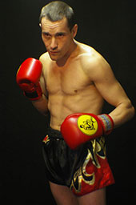

François Moreau
Il commence les arts martiaux par le Judo et le Ju-Jitsu puis pratique la boxe à 17 ans avec le Kickboxing et Full-contact.
Plus tard, il découvre le Kung fu dont il passera sa ceinture noire et son diplôme d'instructeur.
Dans le même temps, il pratique le Muay thaï, la boxe Cambodgienne et le Pancrace et combat dans chacunes de ces disciplines.
Palmarès : Vice champion de France 2004 et champion de France 2005.